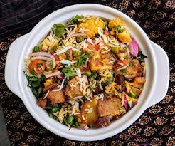

Kabuli Pulao is a delicious and easy to make pulao recipe made with kabuli chana, rice and spices. This is a simple and easy to make pulao recipe which can be made in a jiffy. This is a perfect pulao recipe for lunch box or for a quick meal.

Ingredients
3 Tsp oil
1Bay Leaf
1Star anise
5Cloves
1 InchCinnamon
1 TspCumin Seeds
3/4 TspAmmchur
1Onion (Finely Chopped)
1 TspGinger Garlic Paste
1/2 TspGaram Masala
1Tomato(Finely Chopped)
1/4 TspTurmeric
1 TspKashmiri red chilli powder
1/2 TspCoriander Powder
1/4 TspCumin Powder
1 TspKasuri Methi
1 TspSalt
2 CupWater
1 CupChickpea
1 CupBasmati rice
Coriander to Garnish
Preparation
firstly, in a pressure cooker heat 3 tsp oil and saute 1 bay leaf, 1 star anise, 5 cloves, 1 inch cinnamon and 1 tsp jeera till it turns aromatic.
Saute onion, ginger garlic paste and tomatoes.
further add ¼ tsp turmeric, 1 tsp chilli powder, ½ tsp coriander powder, ¼ tsp cumin powder, ½ tsp garam masala, ¾ tsp aamchur, 1 tsp kasuri methi and 1 tsp salt. saute well.
now add 1 cup soaked and boiled chickpea and saute for a minute.
furthermore add 1 cup basmati rice (soaked for 20 minutes) and saute gently.
now add 2 cup water and stir well.
cover and pressure cook for 2 whistles.
finally, garnish with coriander and serve chana pulao along with onion tomato raita.